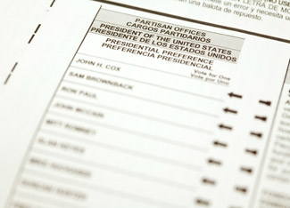

On Tuesday, Nov. 4, 2008, voters will cast ballots in the 2008 general election. More so than in recent years, anticipation is on the rise for this election. Registration numbers have increased in nearly every state, and in some states it’s still not too late.
The League of Women Voters helps voters in all states to find registration deadlines, verify registration status, locate polling places, look at issues on the ballot, check voting hours and register to vote (if the deadline hasn’t passed).
Whether this is your first election or you’re a voting veteran, here are answers to some basic questions, along with helpful resources.
Most state government Web sites have a voter registration guide you can go to Vote411 to find the link to your state. Federal law dictates that all states have registration deadlines at least 30 days before the election, which was Oct. 4. Many states have moved the deadline closer to Election Day in order to give citizens more time to register. Idaho, Iowa, Maine, Minnesota, Montana, New Hampshire, Wisconsin and Wyoming allow same-day voter registration. North Dakota is the only state that doesn’t require registration to vote.
This year it’s more important than ever to check your registration status, which you can do by calling your secretary of state’s office or going to Vote411. It’s easy to do and is the best way to avoid a surprise when you go vote.
According to a New York Times article, tens of thousands of voters have been removed from voter registration rolls in key states such as Colorado, Indiana, Michigan, Nevada, North Carolina and Ohio as a result of mistakes made by state workers trying to comply with the Help America Vote Act of 2002, which overhauled the way elections are run. To comply with the Act, states go through a more rigorous screening process with new voter registration forms, as well as when verifying voters already on the rolls.
Some predict that thousands of voters will show up to vote on Election Day, but not be able to do so because their names were removed from the voter rolls in their precincts.
In this situation, voters cast provisional ballots. But provisional ballots typically aren’t counted if an election isn’t close, as it costs states money to verify if the voter was eligible to vote at that location.
For people who have moved because of displacement from Hurricane Ike, home foreclosures or just moved, you need to reregister at your new address. Most states’ voter registration forms are also used as address change forms. Some states have passed laws requiring identification at polling places. If your state requires id, it will need to match the address you are registered at. Common forms of id are: driver’s licenses, utility bills, paychecks or voter registration cards. You can also find information of both moving registration and id requirements at Vote411.
Polling place hours vary by precinct, but most are open from 7 a.m. to 7 p.m.
Some states have early voting, allowing people to vote weeks before Election Day. Ohioans may vote 35 days early, and Texans can vote 17 days before Election Day, meaning many Americans have already voted.
Another way to vote early is with an absentee ballot. Not all states have absentee ballots, and some that do have restrictions on them. California, Washington and Arizona (among others) don’t have any restrictions on who can apply for an absentee ballot. Oregonians all vote by mail. Ballots are mailed 18 days before the election and voters cast their ballots by mailing or dropping them off with an election administrator before Election Day. Vote411 allows users to apply for absentee ballots in their state and check if their state allows early voting.
The League of Women Voters’ Web site also features brief position statements from three of the presidential candidates: Republican John McCain, Democrat Barack Obama and Independent Ralph Nader. Their positions on education, U.S. global strategy, global climate change, economic disparity and healthcare costs are all included.
|
 ISTOCKPHOTO Election Day nears, make sure you're ready and registered. |
|
|